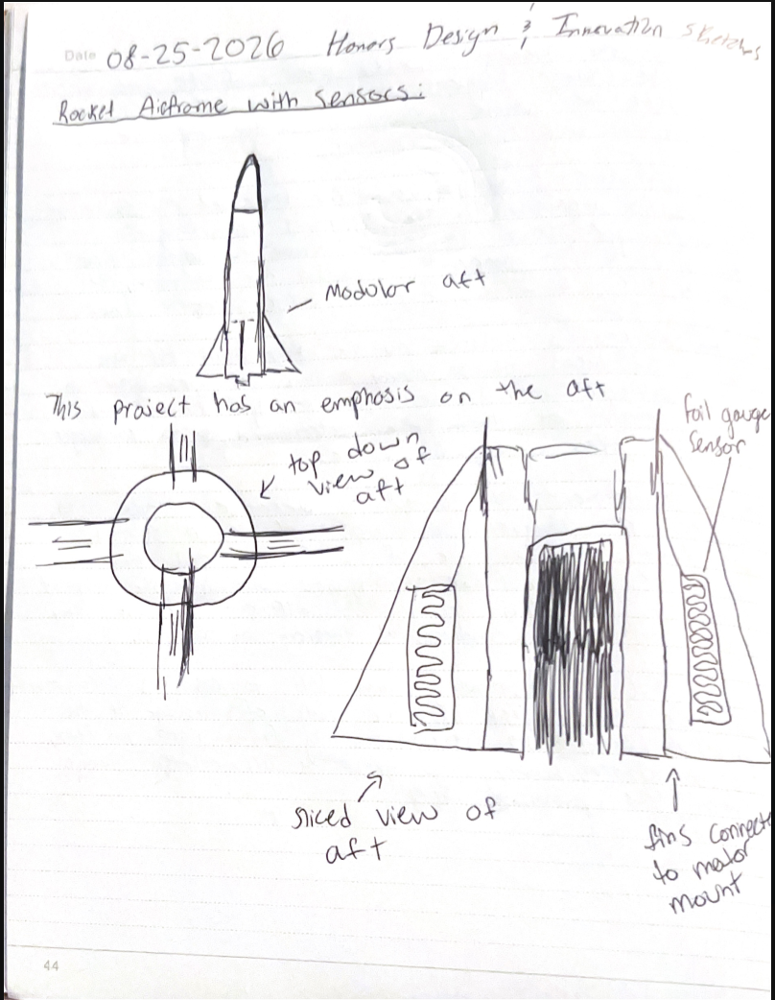
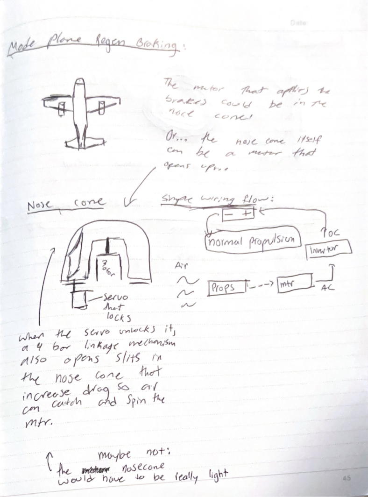
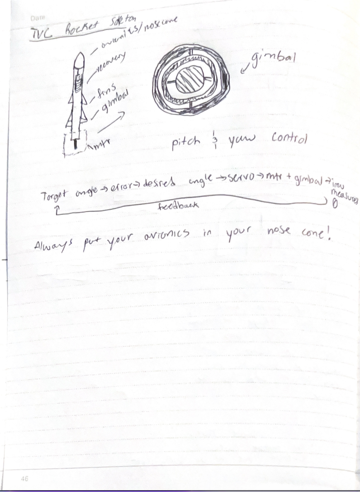

Mr P Look Here:
1. Sensor rocket airframe. Embedd sensors into the airframe of the rocket. Use sensors such as foil strain gauges to determine the forces being exerted on the structures of the rocket and be able to experimentally compare different materials for the use case of rocketry. This project could also elolve into making a "digital twin" of the rocket during flight, which essentially uses all of the data collected by the various sensors (imu, accelerometer, foil gague sensors) to display the stage of flight and the status of all of the parts of the rocket visually to make launch days go by smoother. I like this project because it combines avionics and structures. The limitations in choosing this project are limited launch dates and inconsistent testing opportunities.

2. Regenerative Air Braking for electric planes. Use the motors of the plane and spin them backwards to get some of the electricity lost in braking back for more efficient flight. The inspiration for this project came from my car which uses regenerative breaking in the hybrid system. Adapting the same concept has more limitations during flight than on the ground, but I think this projec thas a much more clear "real world" application. Using electromagnetic induction to potentially make aircraft more efficient is really cool because it combines the avionics and plane build components with a technology that is relatively new in aviation. https://ieeexplore.ieee.org/document/9244329

3. The final project that I would like to consider is a thrust vector controlled model rocket.
This project would implement a gimbaled motor mount and use a control feedback loop to correct
any deviations in flight by translating the command to move in a direction into servo output.
This project is the most technically demanding on paper because it uses things like avionics, control systems,
and building the rocket itself. BPS Space has a cool video on how he did one, which I would draw inspiration from,
but it is also worth noting that this project has been done before and isn't novel.
